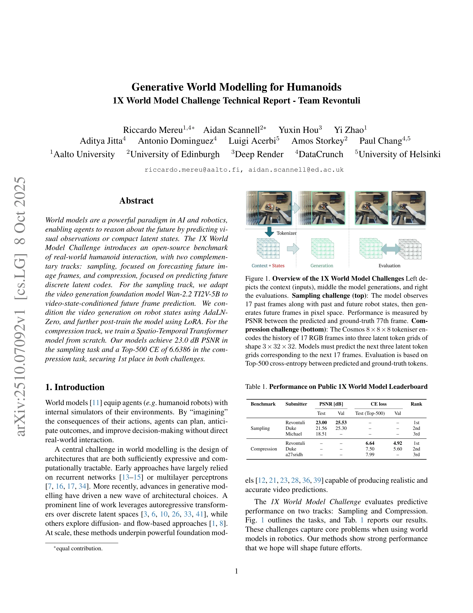
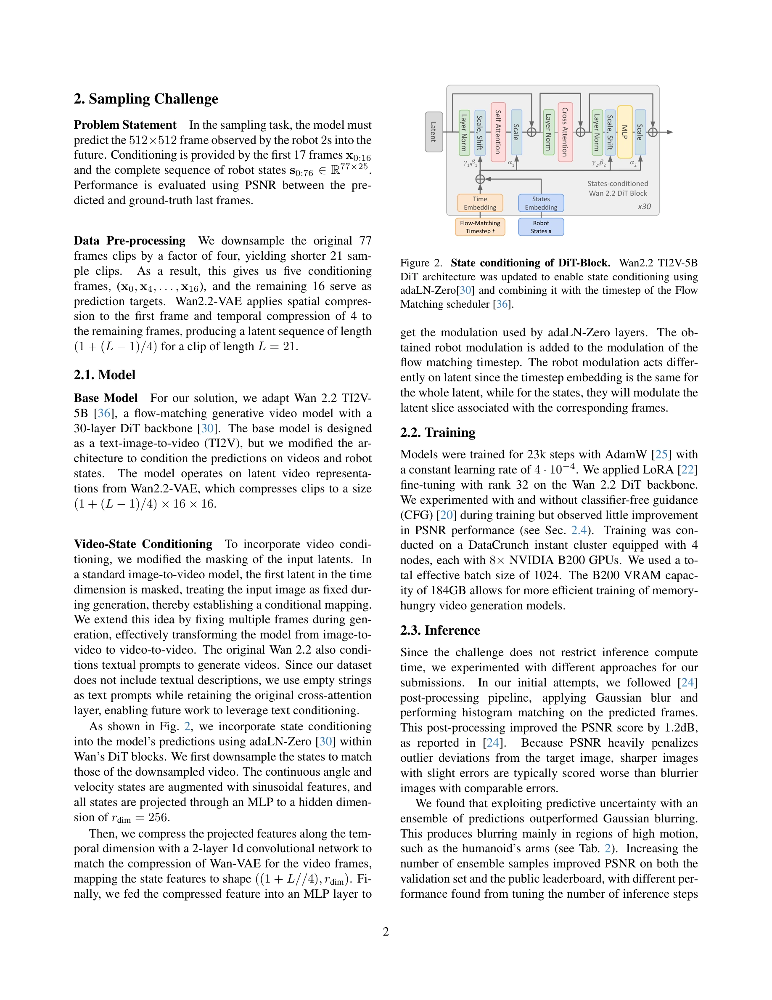

저자: Riccardo Mereu, Aidan Scannell, Yuxin Hou, Yi Zhao, Aditya Jitta, Antonio Dominguez, Luigi Acerbi, Amos Storkey, Paul Chang | 날짜: 2025-10-08 | URL: https://arxiv.org/abs/2510.07092

Figure 1. Overview of the 1X World Model Challenges Left de-
1X World Model Challenge에서 humanoid 로봇의 미래 상태 예측을 위해 Wan 2.2 TI2V-5B를 video-state-conditioned 프레임 예측으로 적응시키고, Spatio-Temporal Transformer를 압축 트랙용으로 훈련하여 두 트랙 모두에서 1위를 달성했다.
Figure 1. Overview of the 1X World Model Challenges Left de-

Figure 2. State conditioning of DiT-Block. Wan2.2 TI2V-5B
총평: 본 논문은 대규모 foundation model을 robot state 조건화로 효과적으로 적응시키고, pixel space와 discrete latent space에서 모두 최고 성능을 달성함으로써 실제 humanoid 로봇 world modeling의 새로운 벤치마크를 제시했다. 방법론의 명확한 설명과 포괄적인 ablation study는 향후 world model 연구에 큰 기여가 될 것으로 예상된다.